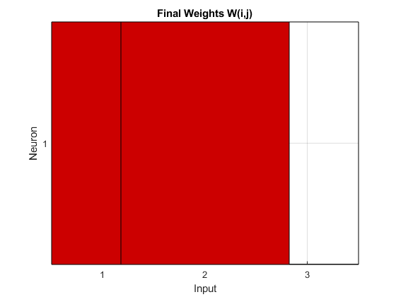

clf reset; clearvars; clc
pausetime = 0;
pauseflag = 1;
maxw = 10;
minw = 0;
P = [
-1.0 -1.0 2.0 1.0 2.0 3.0;
1.0 2.0 -1.0 3.0 3.0 -1.0;
1.0 1.0 1.0 1.0 1.0 1.0
];
T = [1 1 1 -1 -1 -1];
[R, Q] = size(P); [S, Q] = size(T);
W0 = zeros(S, R);
B0 = ones(S, 1);
figure(5)
plotpv(P(1:R-1,:), hardlim(T));
pause(pausetime);
figure(1);
hintonw(W0, maxw, minw);
title('Original Weights W(i,j)');
disp_freq = 1;
max_epoch = 10;
lr = 1;
lp.lr = lr;
lp.dr = 0;
W = W0;
B = B0;
for epoch = 1:max_epoch
for q = 1:Q
A = T(:, q);
dW = learnhd(W, P(:, q), [], [], A, [], [], [], [], [], lp, []);
W = W +dW;
if pauseflag == 1
pause(pausetime)
figure(1)
end
end
if (hardlims(W*P) == T)
break
end
if rem(epoch, disp_freq) == 0
pause(pausetime)
hintonw(W, maxw, minw)
title('Weights W(i,j)');
end
end
hintonw(W, maxw, minw);
title('Final Weights W(i,j)');
pause(pausetime);
disp('With inputs of ');
P
disp('and weights of ');
W
disp('The network responds with outputs');
A = hardlims(W*P)
With inputs of
P =
-1 -1 2 1 2 3
1 2 -1 3 3 -1
1 1 1 1 1 1
and weights of
W =
-60 -30 0
The network responds with outputs
A =
1 1 -1 -1 -1 -1
